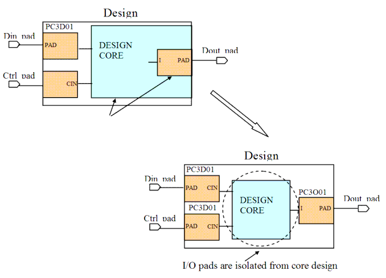

| Description | This rule fires when Leda detects an I/O PAD cell that is not isolated from the core design logic. This rule fires, either if I/O PAD is not instantiated in top module or some other cells are also instantiated in top module. Isolating I/O PAD cells from the core design logic improves performance in chip testing and packaging. Arguments:
%s1 is the hierarchy name of the pad. Source Position: The position is the line in which the pad is instantiated. |
| Policy | DESIGN |
| Ruleset | PAD |
| Language | VHDL/Verilog |
| Type | Hardware |
| Severity | Error |
This example shows the associated design file and illustrates this rule.
// Design File module ntl_pad11_top( Clk, Din, Dout) ; Design_core U0(IClk, IDin, IDout); GTECH_AND2 U1 (.A(net01), .B(net02),.Z(net03)); //rule fires //input PAD GTECH_INBUF I0(.PAD_IN(Clk), .DATA_IN(IClk)); GTECH_INBUF I1(.PAD_IN(Din), .DATA_IN(IDin)); //output PAD GTECH_OUTBUF I2 (.DATA_OUT(IDout), .OE(Ien), .PAD_OUT(Dout) ); endmodule module Design_core(Clk, Din, Dout); ... //PAD GTECH_INBUF I0(.PAD_IN(Clk), .DATA_IN(DIClk) ); //rule fires endmoduleSample Output
6: idcx3 p1 (.QC(in), .PADM(Din));
^
t1.v:10: PAD> [ERROR] NTL_PAD11: Isolate I/O PAD from the core logic
test.p1
--- Other PAD: test.p2
--- Other PAD: test.p3
--- The standard cell: test.u1
In the above sample output,
Secondary Message
Other PAD %s2
Argument
%s2 is the hierarchy name of the pad.
Source Position
The position is the line in which the PAD is instantiated.
Secondary Message
The standard cell: %s3
Argument
%s3 is the hierarchy name of the standard cell instantiation.
Source Position
The position is the line in which the standard cell is instantiated.